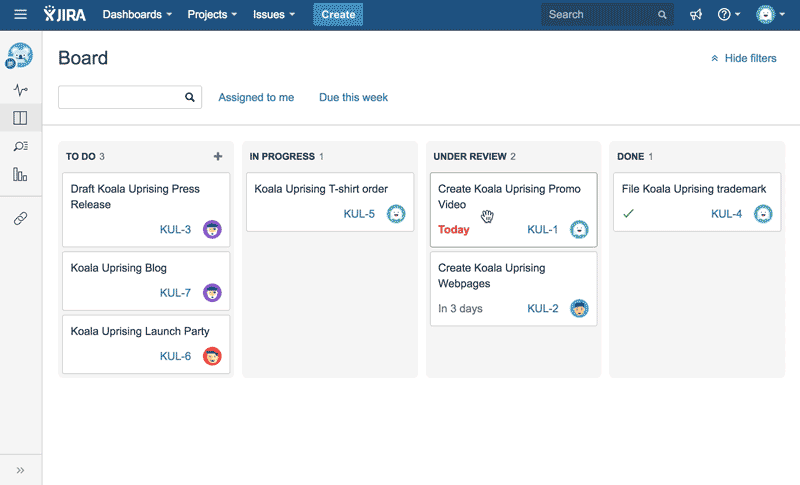
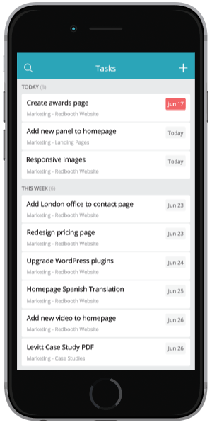
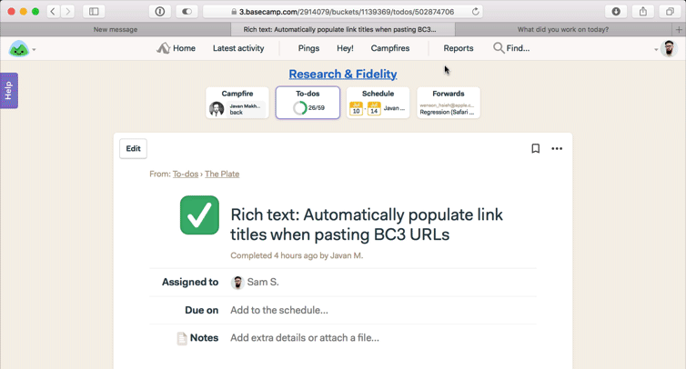

Jira — потужний онлайн сервіс, що дозволяє командам-розробникам планувати проекти, призначати виконавців завдань, планувати спринти і збирати завдання в беклог, виставляти пріоритети і дедлайни.
Drag & Drop для перетягування завдань в беклозі, в спринті, велика кількість налаштувань фільтрації та візуалізація - дозволяє швидко орієнтуватися і робити зміни в спринті.
Для інтеграції з зовнішніми системами підтримує інтерфейси SOAP, XML-RPC і REST.
Можливість вибору причин для закриття завдань та детальні звіти. Простота в управлінні проектами також простий і зручний трекер часу.
GanttPro - діаграма Ганта, що дозволяє планувати і управляти проектами онлайн, візуалізувати процеси, створювати завдання і призначати їх учасникам, виставляти дедлайни і відсоток завершення окремих завдань і проекту в цілому, додавати віхи, а також ділитися створеним графіком Ганта з командою і з клієнтами з правом перегляду або редагування.
Наявність автоматичного планування проектів та додавання файлів до існуючих онлайн діаграм з можливістю коментування. Drag & Drop для перетягування завдань, виставлення відсотка виконання і т.д.
Можливість виставляти власні робочі дні та години для більш якісного управління проектами. Автоматичний перерахунок тривалості завдань і проектів, також виставлення залежностей між завданнями.
Можливість створення складних, багаторівневих проектів. Призначення ролей членам команди і прав доступу. Гарна підтримка користувачів.
Active Collab - як і всі сервіси управління проектами, має можливість працювати над проектами разом з командою, управляти завданнями, стежити за прогресом. Але крім цього, Active Collab пропонує завантажити поточні витрати і інвойси, дозволяючи миттєво оплатити їх за допомогою PayPal або кредитної карти.

Простота використання, можливість згадувати в коментарях учасників проекту.
Спільне написання контенту, пропонує рішення, яке ви можете встановити на власний сервер.
Крім основної програми, доступної з Інтернет-браузера, Active Collab також доступний для iPad, iPhone та Android.
MS Project - гігант на ринку управління проектами, в основі якого лежить діаграма Ганта, що дозволяє планувати проекти і управляти ресурсами, планувати сценарії «що якщо», а також встановлювати і стежити за дедлайнами і прогресом.
Кожен проект создвавать і вести в MS Project, а міжпроектної проблеми відслідковувати в програмах, які дозволяють переглядати кілька mpp одночасно. Наприклад, LiveProject ProjectsView. І контролювати завантаження виконавців.
Цей продукт інтегрується з іншими, що дає можливість побудувати потужну систему. MS SPS і Project Server дають працювати з ризиками проекту.
Використовувати online сервіс з потрібною функціональністю типу Jira (з відповідним плагіном) або LiquidPlanner.
Redbooth - web-сервіс, доступний також на iOS і Android, що дозволяє відстежувати помилки, планувати проекти і активності, управляти ресурсами і ставити завдання учасникам проекту, встановлювати дедлайни і віхи проекту, стежити за витратами проекту.
Простий і інтуїтивний Інтерфом та можливості чату
Сервіс пропонує ділитися файлами і синхронізацію з Google Drive, Gmail і Outlook.
Інтеграції з іншими сервісами, теги для задач, можливість створення звітів.
Basecamp - один з найбільш популярний онлайн-сервісів для спільної роботи над проектами, що дозволяє ділитися документами, вести обговорення з командою.
Дозволяє успішно працювати разом як маленьким, так і великим командам.
Простий у використанні, наявність миттєвих повідомлень про оновлення.
Створення to-do листів і додавання коментарів до завдань, висилати і приймати електронну пошту.